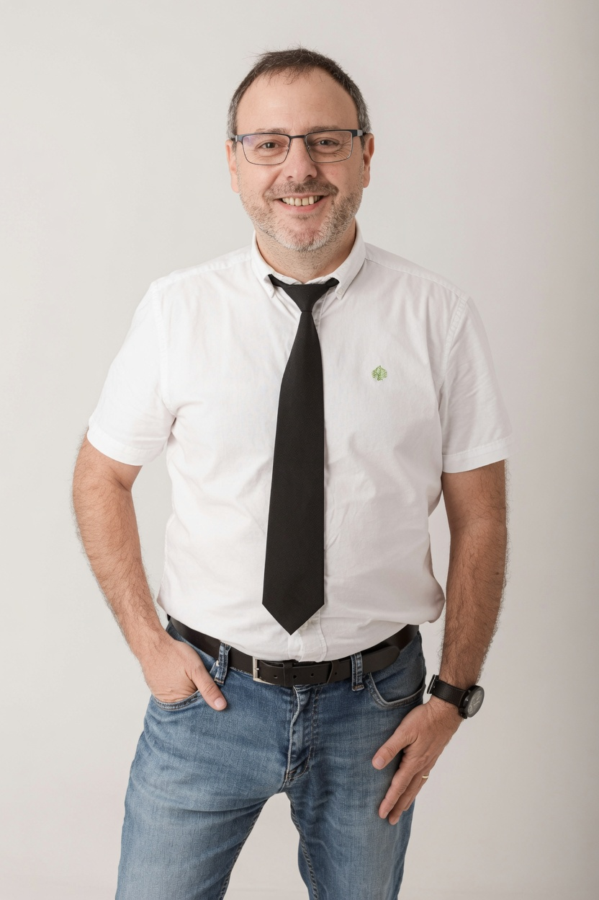

Teledetección
Desarrollo de metodologías basadas en imágenes satelitales y sensores remotos para monitorizar el estado fisiológico de los cultivos.
Explorar línea
Mi investigación se centra en el desarrollo de tecnologías avanzadas para monitorizar cultivos, optimizar el uso del agua y mejorar la sostenibilidad de los sistemas agrícolas mediante teledetección, sensores remotos e inteligencia artificial.
Soy Investigador Científico en la Estación Experimental de Aula Dei (EEAD-CSIC), donde desarrollo mi actividad en el ámbito de la agricultura de precisión, la teledetección y el fenotipado de cultivos.
Mi investigación integra imágenes satelitales, plataformas UAV, sensores térmicos y multiespectrales, así como modelos de inteligencia artificial para comprender la respuesta de los cultivos frente al estrés ambiental.
El objetivo de este trabajo es generar conocimiento que contribuya a una agricultura más eficiente, resiliente y sostenible frente a los retos del cambio climático.
Ver CV completo
Doctor en Ciencias Agrarias
Universidad de Zaragoza
Investigador Científico
EEAD-CSIC
Teledetección
Agricultura de precisión
Fenotipado vegetal
Inteligencia Artificial
Participación en proyectos nacionales e internacionales junto a universidades, centros de investigación y empresas del sector agroalimentario.
Mi investigación combina teledetección, plataformas UAV, sensores ambientales e inteligencia artificial para estudiar el comportamiento de los cultivos y desarrollar herramientas que ayuden a una agricultura más eficiente y sostenible.
Desarrollo de metodologías basadas en imágenes satelitales y sensores remotos para monitorizar el estado fisiológico de los cultivos.
Explorar líneaIntegración de drones y sensores científicos para adquirir información multiespectral, térmica y de muy alta resolución.
Explorar líneaEvaluación del crecimiento y de la respuesta de los cultivos mediante sensores, visión artificial y plataformas automáticas de adquisición de datos.
Explorar líneaDesarrollo de indicadores para detectar estrés hídrico y optimizar el manejo del riego mediante técnicas de observación remota.
Explorar líneaAplicación de algoritmos de aprendizaje automático para interpretar grandes volúmenes de datos y generar modelos predictivos en agricultura.
Explorar líneaDescubre cómo satélites, drones, sensores e inteligencia artificial se integran para transformar datos en conocimiento científico útil para la toma de decisiones.
Explorar procesoEstudio sobre la respuesta de diferentes variedades de manzano al estrés hídrico mediante monitorización térmica continua en campo.
Leer publicación →Uso de imágenes de alta resolución para caracterizar infestaciones de malas hierbas en agricultura de precisión.
Leer publicación →Desarrollo de técnicas de georreferenciación para imágenes obtenidas mediante sensores remotos.
Leer publicación →